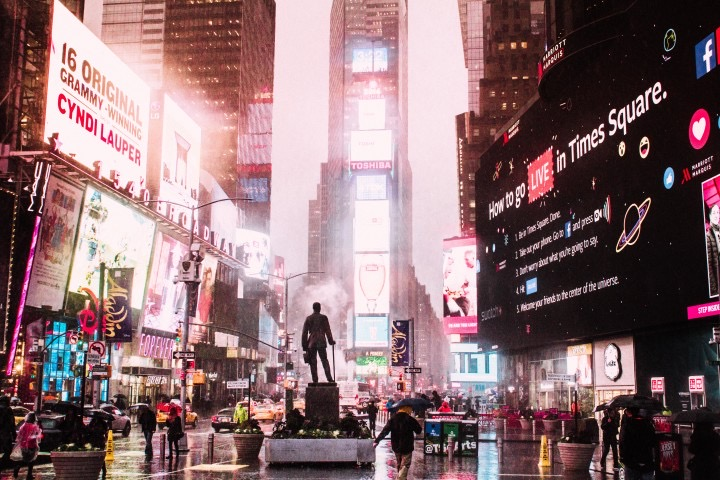
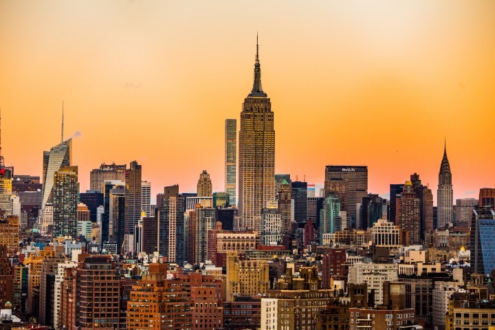

Time Square is the heart of New York, it has become the symbol of this vibrant metropolis, with is huge, illuminated advertising hoardings: the star of many a movie.

Tmes Square is New York's most famous landmark
With its neon lights and billboards, Time Square is New York's most famous landmark and is the liveliest area in the city, located at the intersection of 7th Avenue and Broadway.
When night falls, the lights of Times Square illuminate the city, and local and tourist alike are totally enchanted by the city's most famous square.

New York's most iconic skyscraper, the Empire State Building
In Times Square you will find bars, restaurants, theatres and museums.
Also big, bright and unforgettable.
The Empire State Building, steel-framed skyscraper rising 102 stories that was completed in New York City in 1931 and was the tallest building in the world until 1971.
The best time to visit the building is during sunset. It's worth every dollars. You will get to take astounding pictures, so make sure you bring your best photography equipment.
You can stay as much as you want in the viewpoint to see incredible view Manhattan skyline.